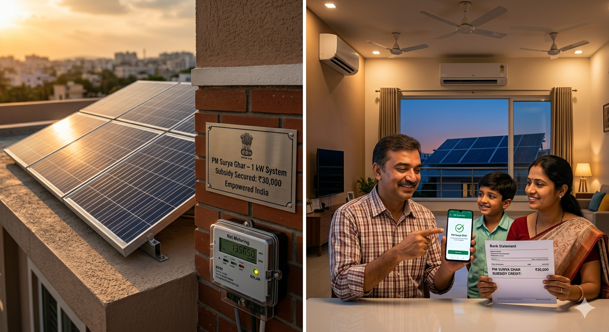

Solar Panels ఎంత Electricity Produce చేస్తాయి?
- 1 kW system → 4 to 5 units per day
- 3 kW system → 12 to 15 units per day
- 5 kW system → 20 to 25 units per day

Solar generation location, weather, panel efficiency మీద ఆధారపడి ఉంటుంది.
Back to Blogs